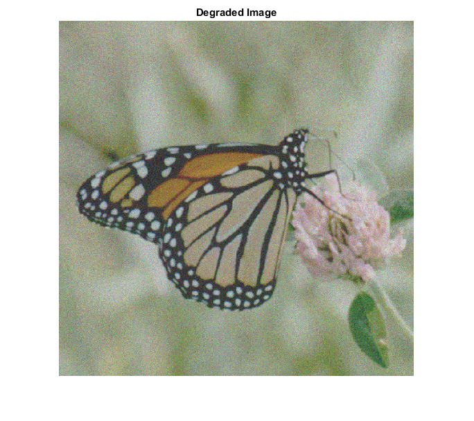
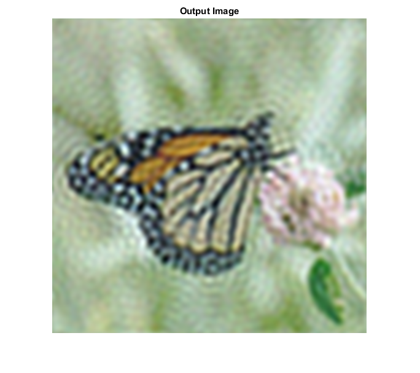

LEAST_SQUARES_FILTER_CVIP
least_squares_filter_cvip() - performs the least squares restoration filter.
Contents
SYNTAX
Y = least_squares_filter_cvip(d,h,cutoff,limitGain,p,gamma)
Input Parameters include:
- d - The degraded image.A single or multiband image.
- h - The degradation function.It can be single band.
- cutoff - Cutoff frequency for filtering.
- limitGain - Sets the maximum gain using the DC value as a baseline. limitGain=1 --> DC value is the maximum gain. limitGain>1 --> DC_value*limitGain is the maximum gain.
- p - Smoothness criterion function.
- gamma - gamma in the generalized restoration equation.
OutputParameter include :
- Y - The output image after restoration filtering.
DESCRIPTION
This function implements the Least Squares restoration filter on a degraded image to restore it to its original state. The filter is an alternate to the practical weiner filter as it replaces the power spectrum in the weiner filter with a function that varies with frquency. This function implements the filter by multipying it to the fourier transform of the degraded image and then applying inverse fourier transform to obtain the restored image.
REFERENCE
1. Scott E Umbaugh. DIGITAL IMAGE PROCESSING AND ANALYSIS: Applications with MATLAB and CVIPtools, 3rd Edition.
EXAMPLE
% Read Image d = imread('Butterfly.gaussian.tif'); % Cuttoff frequency cutoff = 32; % limitgain limitGain = 10; % Degradation function h = [2.250 4.500 2.250; 4.500 9.001 4.500; 2.250 4.500 2.250]; % Gamma gamma = 0.5; % Smoothness criteria p = 1; % Calling function Y =least_squares_filter_cvip(d,h,cutoff,limitGain,p,gamma); % Display input image figure;imshow(d);title('Degraded Image'); % Display output image figure;imshow(remap_cvip(Y));title('Output Image'); 
CREDITS
Author: Mehrdad Alvandipour, october 2016
Copyright © 2017-2018 Scott
E Umbaugh
For updates visit CVIP Toolbox Website